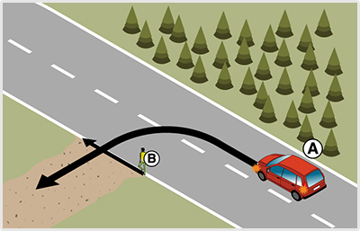
- 1888. Az ’A’ jelű személygépkocsival a képen látható helyen balra kíván kanyarodni. Válassza ki a helyes állítást! #703766
- Köteles a ’B’ jelű gyalogosnak elsőbbséget adni.
- Számíthat arra, hogy a gyalogos segíteni fogja a kanyarodását.
- Az érkező gyalogost megállásra kényszerítheti.
- 1889. Az ’A’ jelű személygépkocsi a képen látható helyen balra kíván kanyarodni. Eközben... #703767
- a gyalogost nem zavarhatja.
- a gyalogost feltarthatja.
- a gyalogostól elsőbbséget fog kapni.
- 1890. A ’B’ jelű gyalogos köteles-e elsőbbséget adni az ’A’ jelű személygépkocsi részére? #703768
- Nem.
- Igen.
- Csak akkor, ha az útpadkán gyalogol.
- 1891. Köteles-e az ’A’ jelű személygépkocsi elsőbbséget adni a ’B’ jelű gyalogos részére? #703769
- Igen.
- Nem.
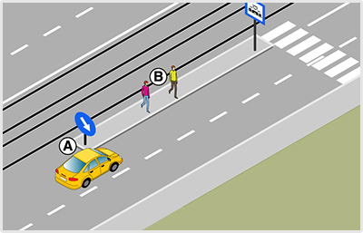
- 1892. Ön az 'A' jelű gépkocsit vezeti. Köteles-e a járdaszigetről az ábrázolt helyen lelépő 'B' jelű gyalogosok részére elsőbbséget adni? #703854
- Nem, de fokozottan ügyelni kell a biztonságukra.
- Igen.
- Igen, de csak akkor, amikor villamos áll a megállóhelyen.

- 1893. Ön az ’A’ jelű személygépkocsival az úttest széléről kíván elindulni. Köteles-e elsőbbséget adni a kézikocsit húzó ’B’ jelű személy részére? #703892
- Igen, minden esetben.
- Nem, mert a kézikocsi nem jármű, ezért elsőbbséget sem kell adni számára.
- Nem, mert a kézikocsival a járdán kell közlekedni.
- 1894. Ön a ’B’ jelű kézikocsival az úttesten halad. Számíthat-e arra, hogy az ’A’ jelű személygépkocsi az úttest szélérő elindulva elsőbbséget fog Önnek adni? #703893
- Igen, hiszen a kézikocsi is a forgalomban részt vevő jármű.
- Nem, mert a kézikocsi nem minősül járműnek.
- Nem, mert kézikocsival a járdán kellene haladnia.
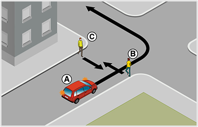
- 1895. Ön az ’A’ jelű gépkocsival közlekedik. Melyik állítás igaz az ábrázolt forgalmi helyzetre? #703967
- A ’B’ és a ’C’ jelű gyalogosokkal szemben elsőbbsége van.
- Köteles a ’B’ és ’C’ jelű gyalogosok részére elsőbbséget adni.
- Csak a ’B’ jelű gyalogos részére köteles elsőbbséget adni.
- 1896. Az ’A’ jelű személygépkocsi az ábrázolt nyomvonalon kíván továbbhaladni. Ebben a forgalmi szituációban... #703968
- elsőbbsége van a gyalogosokkal szemben.
- a gyalogosokat nem zavarhatja.
- köteles a gyalogosok részére elsőbbséget adni.
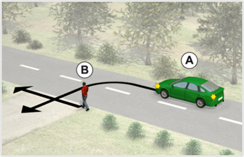
- 1897. Az ’A’ jelű személygépkocsival a képen látható helyen balra kíván kanyarodni. Válassza ki a helyes állítást! #706921
- Köteles a ’B’ jelű gyalogosnak elsőbbséget adni.
- Számíthat arra, hogy a gyalogos segíteni fogja a kanyarodását.
- Az érkező gyalogost megállásra kényszerítheti.
- 1898. Az ’A’ jelű személygépkocsi a képen látható helyen balra kíván kanyarodni. Eközben... #706923
- a gyalogost nem zavarhatja.
- a gyalogost feltarthatja.
- a gyalogostól elsőbbséget fog kapni.
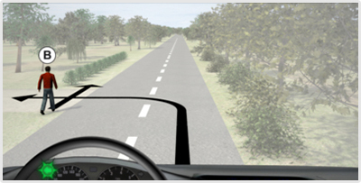
- 1899. Ön a kormáykerékkel jelzett járművel a képen látható helyen balra kíván kanyarodn. Eközben ... #706924
- a gyalogost nem zavarhatja.
- a gyalogost feltarthatja.
- a gyalogostól elsőbbséget fog kapni.
- 1900. A ’B’ jelű gyalogos köteles-e elsőbbséget adni az ’A’ jelű személygépkocsi részére? #706925
- Nem.
- Igen.
- Csak akkor, ha az útpadkán gyalogol.
- 1901. A ’B’ jelű gyalogos köteles-e elsőbbséget adni az Ön által vezetett jármű részére? #706926
- Nem.
- Igen.
- Csak akkor, ha az útpadkán gyalogol.
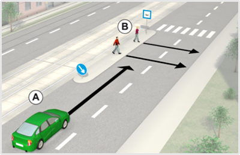
- 1902. Ön az ’A’ jelű gépkocsit vezeti. Számíthat-e arra, hogy figyelmetlen gyalogosok a villamos megállóhelyről az úttestre lépnek? #707072
- Igen, ezért fokozottan ügyelni kell a megállóhelyről lelépő gyalogosokra.
- Mivel a gyalogosoknak itt elsőbbségük van, köteles megállni, és átengedni őket.
- Nem, mert a gyalogosok csak a kijelölt gyalogos-átkelőhelyen mehetnek át az úttesten.
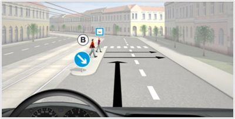
- 1903. Ön a kormánykerékkel jelzett jármvet vezeti. Számíthat-e arra, hogy figyelmetlen gyalogosok a villamos megállóhelyről az úttestre lépnek? #707073
- Igen, ezért fokozottan ügyelni kell a megállóhelyről lelépő gyalogosokra.
- Mivel a gyalogosoknak itt elsőbbségük van, köteles megállni, és átengedni őket.
- Nem, mert a gyalogosok csak a kijelölt gyalogos-átkelőhelyen mehetnek át az úttesten.
- 1904. Ön az ’A’ jelű gépkocsit vezeti. Köteles-e a ’B’ jelű gyalogosok részére elsőbbséget adni? #707074
- Nem, de fokozottan ügyelni kell a megállóhelyről lelépő gyalogosokra.
- Igen, az elsőbbség megilleti a gyalogosokat a megállóhely teljes hosszában.
- Igen, de csak akkor, amikor villamos áll a megállóhelyen.
- 1905. Ön a kormánykerékkel jelzett járművet vezeti. Köteles-e a ’B’ jelű gyalogosok részére elsőbbséget adni? #707075
- Nem, de fokozottan ügyelni kell a megállóhelyről lelépő gyalogosokra.
- Igen, az elsőbbség megilleti a gyalogosokat a megállóhely teljes hosszában.
- Igen, de csak akkor, amikor villamos áll a megállóhelyen.

- 1906. Ön az ’A’ jelű személygépkocsival az úttest széléről kíván elindulni. Köteles-e elsőbbséget adni a kézikocsit húzó ’B’ jelű személy részére? #707150
- Igen, minden esetben.
- Nem, mert a kézikocsi nem jármű, ezért elsőbbséget sem kell adni számára.
- Nem, mert a kézikocsival a járdán kell közlekedni.
- 1907. Ön a ’B’ jelű kézikocsival az úttesten halad. Számíthat-e arra, hogy az ’A’ jelű személygépkocsi az úttest szélérő elindulva elsőbbséget fog Önnek adni? #707151
- Igen, hiszen a kézikocsi is a forgalomban részt vevő jármű.
- Nem, mert a kézikocsi nem minősül járműnek.
- Nem, mert kézikocsival a járdán kellene haladnia.
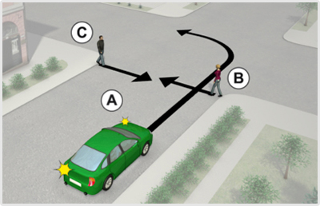
- 1908. Ön az ’A’ jelű gépkocsival közlekedik. Melyik állítás igaz az ábrázolt forgalmi helyzetre? #707250
- A ’B’ és a ’C’ jelű gyalogosokkal szemben elsőbbsége van.
- Köteles a ’B’ és ’C’ jelű gyalogosok részére elsőbbséget adni.
- Csak a ’B’ jelű gyalogos részére köteles elsőbbséget adni.
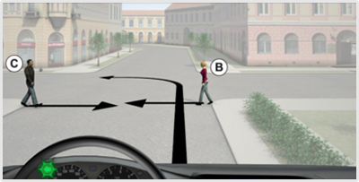
- 1909. Ön a kormánykerékkel jelzett járművel a képen látható helyen közlekedik. A tervezett manőver kapcsán van-e elsőbbségadási kötelezettsége? #707251
- Nincs.
- Igen, mindkét gyalogos részére.
- Igen, de csak a 'B' jelű gyalogos részére.
- 1910. Az ’A’ jelű személygépkocsi az ábrázolt nyomvonalon kíván továbbhaladni. Ebben a forgalmi szituációban... #707252
- elsőbbsége van a gyalogosokkal szemben.
- a gyalogosokat nem zavarhatja.
- köteles a gyalogosok részére elsőbbséget adni.
- 1911. Ön a kormánykerékkel jelzett járművel a képen látható nyomvonalon kíván továbbhaladni. Eközben... #707253
- elsőbbsége van a gyalogosokkal szemben.
- a gyalogosokat nem zavarhatja.
- köteles a gyalogosok részére elsőbbséget adni.
- 1912. Ön a kormánykerékkel jelzett járművel a képen látható helyen balra kíván kanyarodni.Köteles elsőbbséget adni a ’B’ jelű gyalogos részére? #707467
- Igen.
- Nem.
- 1913. Köteles-e az ’A’ jelű személygépkocsi elsőbbséget adni a ’B’ jelű gyalogos részére? #707514
- Igen.
- Nem.
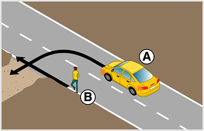
- 1914. Az ’A’ jelű személygépkocsi az ábrán látható helyen balra kíván kanyarodni. A manőver során... #714778
- a gyalogos részére elsőbbséget kell adnia.
- a gyalogost akár fel is tarthatja.
- a gyalogossal szemben elsőbbsége van.
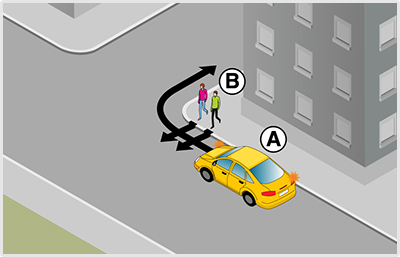
- 1915. Köteles-e az ábrán látható ’B’ jelű gyalogosok részére az ’A’ jelű személygépkocsi vezetője elsőbbséget adni? #714785
- Nem.
- Igen.
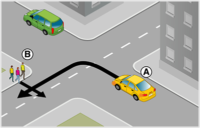
- 1916. Köteles-e az ’A’ jelű jármű vezetője elsőbbséget adni az ábrán látható ’B’ jelű gyalogosok részére? #714786
- Igen.
- Nem, mert kanyarodás közben az úttesten áthaladó gyalogosok a járműveknek kötelesek elsőbbséget adni.
- Nem, mert csak a kijelölt gyalogos-átkelőhelyen áthaladó gyalogosok részére kell elsőbbséget adni
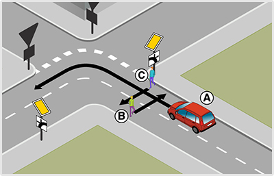
- 1917. Az ’A’ jelű jármű a képen látható helyen közlekedik. Válassza ki a helyes állítást! #715005
- Elsőbbsége van a ’B’ és ’C’ jelű gyalogosokkal szemben.
- Köteles a ’B’ és ’C’ jelű gyalogosok részére elsőbbséget adni.
- A ’B’ és ’C’ jelű gyalogosokat nem zavarhatja az áthaladásukban.
- 1918. Az ’A’ jelű jármű a képen látható nyomvonalon kíván továbbhaladni. Eközben... #715006
- a gyalogosokkal szemben elsőbbsége van.
- a gyalogosokat nem zavarhatja.
- a gyalogosok részére elsőbbséget kell adnia.
- 1919. Köteles-e a képen látható ’B’ és ’C’ jelű gyalogosok részére az ’A’ jelű jármű vezetője elsőbbséget adni? #715008
- Nem.
- Igen.
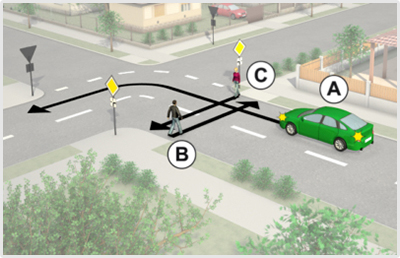
- 1920. Köteles-e a képen látható ’B’ és ’C’ jelű gyalogosok részére az ’A’ jelű jármű vezetője elsőbbséget adni? #715811
- Nem.
- Igen.
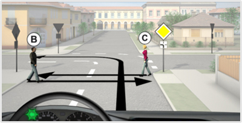
- 1921. Köteles-e a képen látható ’B’ és ’C’ jelű gyalogosok részére a kormánykerékkel jelzett járművel közlekedve elsőbbséget adni? #715818
- Nem.
- Igen.
- 1922. Köteles-e az ’A’ jelű személygépkocsi vezetője elsőbbséget adni a ’B’ és a ’C’ jelű gyalogosok részére az ábrázolt forgalmi helyzetben? #716240
- Nem.
- Igen.
- Igen, de csak akkor, ha nincs mögöttes járműforgalom.
- 1923. Köteles-e a kormánykerékkel jelzett jármű vezetője elsőbbséget adni a ’B’ és a ’C’ jelű gyalogosok részére az ábrázolt forgalmi helyzetben? #716241
- Nem.
- Igen.
- Igen, de csak akkor, ha nincs mögöttes járműforgalom.